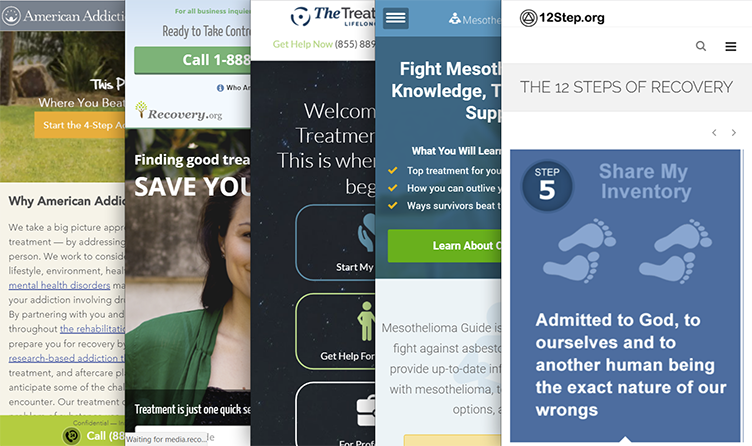
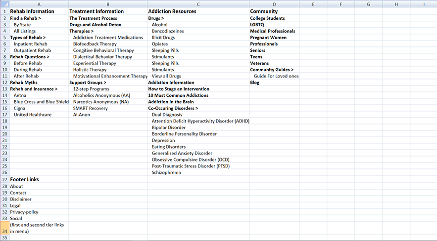
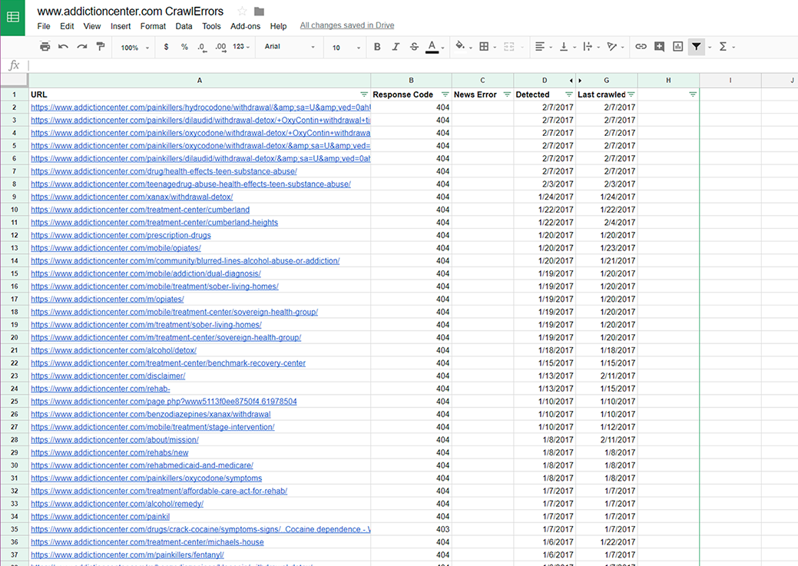
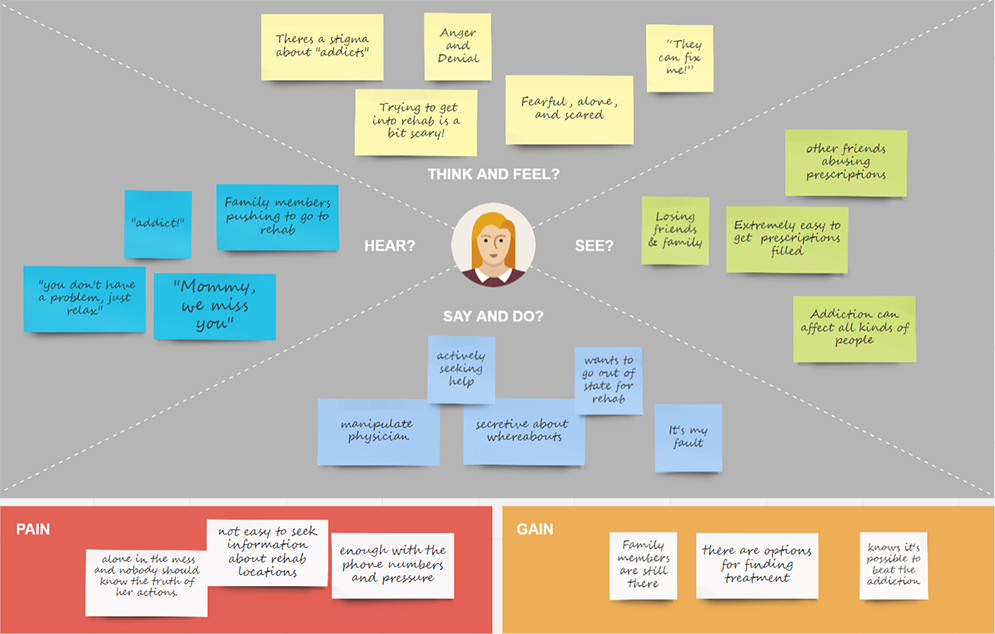
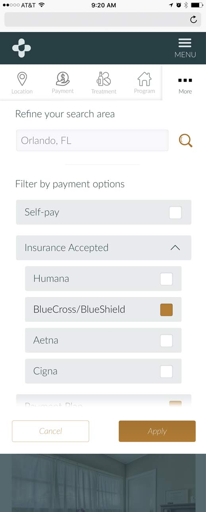
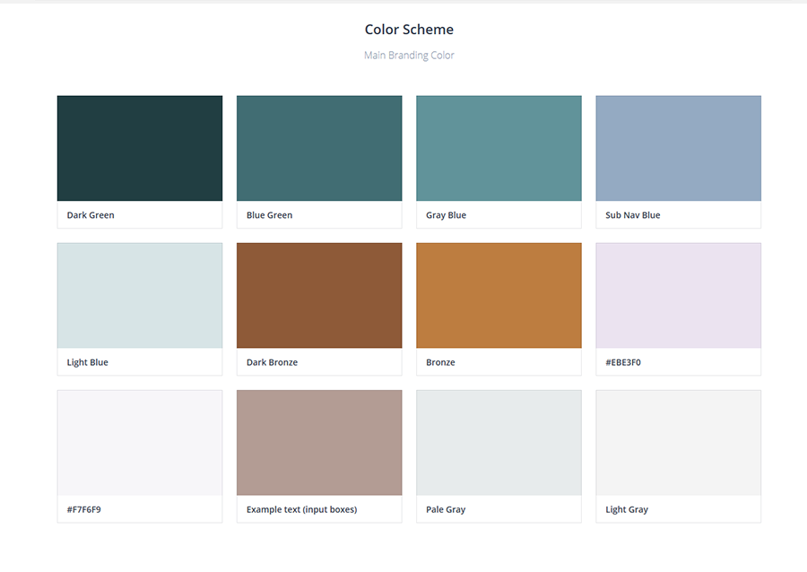

80%
Case study
Redeveloping AddictionCenter.com
AddictionCenter.com was already a high-performing property, but the experience had become too cold, too rigid, and too eager to push people toward a call. This redevelopment focused on a harder question: how to help people research treatment in a way that felt trustworthy, mobile-first, and self-directed, especially when many visitors were arriving in moments of uncertainty or distress.
tl;dr
- Almost 80% of competitor traffic came from mobile, making mobile-first a strategic requirement rather than a design preference.
- A content audit surfaced nearly 150 dead links, turning information architecture cleanup into an early trust issue.
- Audience surveys and call data showed that people needed support, autonomy, and emotional steadiness while researching treatment.
- The redesigned locator, calmer visual language, and cleaner menu structure were built to support self-directed search on users’ own terms.
- After launch, the site saw a 30% increase in conversions, an 18% increase in site traffic, and rising call and ad performance.
What We Learned
Mobile-First Was a Strategic Opportunity, Not a Cosmetic Trend
Competitor analysis showed that the vast majority of traffic in this category was already arriving from mobile devices. That made the redesign less about keeping up with interface trends and more about choosing the right product constraints from the beginning.
If most people were encountering the experience on a phone, the site had to help them find trustworthy information quickly, understand next steps, and decide whether to keep researching or reach out for help without getting lost in heavy navigation or visually noisy pages.
It also pushed us away from a feature war. The goal was not to out-gimmick competitors. It was to create a more useful, more credible experience under the real conditions in which people were arriving.


Content Debt Was a Trust Problem, Not Just a Maintenance Problem
Addiction Center had built up a substantial content footprint, which helped search visibility but also introduced structural drag. Once the audit took shape, we found almost 150 dead links alongside pathways that no longer matched how users were trying to navigate the site.
That changed the order of operations. Before adding more polish or more features, the experience needed fewer dead ends, cleaner pathways, and an information architecture that felt dependable again.
The revised structure gave the team a sturdier scaffold for future content and helped the product feel less like a maze of high-intent landing pages. In a space where credibility matters immediately, broken links and unclear menus are not minor defects. They are signals that the product may not be safe to trust.

Audience Research Reframed the Emotional Tone of the Product
The search for treatment is rarely a purely rational shopping exercise. I paired site and call data with surveys from people who had completed rehabilitation — and what came back was not a list of features people wanted. It was a picture of the emotional conditions under which people make these decisions.
Family dynamics, urgency, shame, location, cost, and readiness all played a role. That meant the site could not behave like a generic lead-gen funnel if it wanted to feel credible. It needed to acknowledge that people were often arriving under stress and with incomplete certainty about their next step.
Audience signal
Call data made the tone and trust problem more concrete
Age
Gender
55.02%
Female
Male 44.98%
Female 55.02%
Relationship to addict
51.9%
Loved ones
Loved ones 51.9%
Addicts 48.1%
The empathy map turned those findings into design guardrails. Instead of leaning on fear or pressure, the product needed to feel supportive, legible, and emotionally steady while still guiding people toward action.

Self-Directed Search Needed to Feel Supportive, Not Transactional
One of the clearest product opportunities was the treatment locator. The existing experience was already generating calls, but it did not offer enough flexibility for people who wanted to research facilities on their own terms before speaking to someone.
Research suggested that users wanted more control, closer to the way they compared hotels or travel options. That meant better filtering, clearer facility details, and a structure that let people keep orienting themselves instead of being rushed into a single path.

The visual system had to reinforce that change. Moving away from the older, colder palette helped the site feel calmer and more trustworthy, while still preserving enough contrast to guide attention toward information and calls to action when users were ready.

Outcome of the Work
I gave AddictionCenter.com a stronger product foundation, not just a fresher interface. Mobile behavior, content structure, search flexibility, and visual tone were realigned around one goal: helping people move from uncertainty to action with less pressure.
That alignment mattered at launch. The new site produced a 30% increase in conversions, an 18% increase in site traffic, higher call volume, and rising treatment center ad sales.
Implications
- Trust improved when content structure and conversion pathways stopped competing with each other.
- Self-directed search let people research treatment without removing higher-intent outreach options.
- A calmer, clearer interface made the site feel more supportive while still driving measurable growth.
It also created a more extensible platform for ongoing experimentation. Search, call-request flows, and A/B testing were no longer bolted onto an aging site. They were part of the product’s core scaffolding.

Continue Exploring
Contact
If you’d like to talk through the redevelopment, I’m happy to share more context.
If you want to discuss the tone argument, the content strategy, or how trust and conversion ended up pulling in the same direction — I’m happy to get into it.